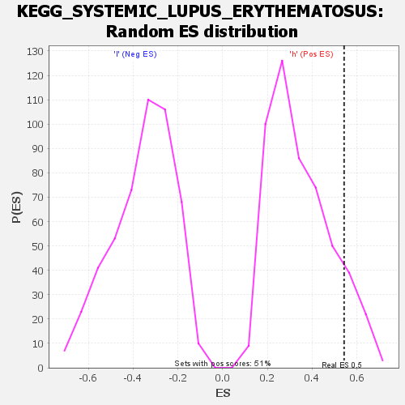

| | | Dataset | VCAN.VCAN.cls#h_versus_l.VCAN.cls#h_versus_l_repos |
| Phenotype | VCAN.cls#h_versus_l_repos |
| Upregulated in class | h |
| GeneSet | KEGG_SYSTEMIC_LUPUS_ERYTHEMATOSUS |
| Enrichment Score (ES) | 0.5426921 |
| Normalized Enrichment Score (NES) | 1.5676305 |
| Nominal p-value | 0.11001965 |
| FDR q-value | 1.0 |
| FWER p-Value | 0.69 |
Table: GSEA Results Summary
 Fig 1: Enrichment plot: KEGG_SYSTEMIC_LUPUS_ERYTHEMATOSUS
Fig 1: Enrichment plot: KEGG_SYSTEMIC_LUPUS_ERYTHEMATOSUS
Profile of the Running ES Score & Positions of GeneSet Members on the Rank Ordered List
| SYMBOL | TITLE | RANK IN GENE LIST | RANK METRIC SCORE | RUNNING ES | CORE ENRICHMENT | | 1 | C1QC | na | 288 | 0.121 | 0.0419 | Yes |
| 2 | CTSG | na | 304 | 0.120 | 0.0883 | Yes |
| 3 | C1QB | na | 690 | 0.105 | 0.1220 | Yes |
| 4 | C1QA | na | 856 | 0.100 | 0.1580 | Yes |
| 5 | HLA-DQB1 | na | 925 | 0.099 | 0.1951 | Yes |
| 6 | GRIN2A | na | 1215 | 0.093 | 0.2259 | Yes |
| 7 | HLA-DPA1 | na | 1514 | 0.088 | 0.2545 | Yes |
| 8 | HLA-DRB1 | na | 1941 | 0.082 | 0.2786 | Yes |
| 9 | ACTN3 | na | 2358 | 0.077 | 0.3010 | Yes |
| 10 | HLA-DMA | na | 2408 | 0.077 | 0.3300 | Yes |
| 11 | IL10 | na | 2919 | 0.072 | 0.3487 | Yes |
| 12 | HLA-DMB | na | 2939 | 0.072 | 0.3762 | Yes |
| 13 | TRIM21 | na | 3132 | 0.070 | 0.4001 | Yes |
| 14 | HLA-DRA | na | 3181 | 0.070 | 0.4264 | Yes |
| 15 | HLA-DQA1 | na | 4223 | 0.062 | 0.4315 | Yes |
| 16 | FCGR2A | na | 4337 | 0.061 | 0.4532 | Yes |
| 17 | CD40 | na | 4363 | 0.061 | 0.4763 | Yes |
| 18 | FCGR1A | na | 4565 | 0.059 | 0.4957 | Yes |
| 19 | HLA-DPB1 | na | 4587 | 0.059 | 0.5183 | Yes |
| 20 | CD86 | na | 5000 | 0.057 | 0.5328 | Yes |
| 21 | C7 | na | 6861 | 0.046 | 0.5169 | Yes |
| 22 | HLA-DOA | na | 7263 | 0.044 | 0.5267 | Yes |
| 23 | FCGR3A | na | 7586 | 0.042 | 0.5373 | Yes |
| 24 | C1R | na | 8134 | 0.040 | 0.5427 | Yes |
| 25 | HLA-DQA2 | na | 9444 | 0.033 | 0.5319 | No |
| 26 | SNRPB | na | 9696 | 0.032 | 0.5399 | No |
| 27 | C2 | na | 12064 | 0.022 | 0.5056 | No |
| 28 | SNRPD1 | na | 12074 | 0.022 | 0.5140 | No |
| 29 | HLA-DRB5 | na | 12909 | 0.019 | 0.5063 | No |
| 30 | SSB | na | 13367 | 0.017 | 0.5047 | No |
| 31 | FCGR3B | na | 14442 | 0.013 | 0.4904 | No |
| 32 | HLA-DOB | na | 15524 | 0.010 | 0.4745 | No |
| 33 | IFNG | na | 16868 | 0.005 | 0.4523 | No |
| 34 | C4A | na | 17085 | 0.005 | 0.4503 | No |
| 35 | C6 | na | 17349 | 0.004 | 0.4471 | No |
| 36 | CD28 | na | 17938 | 0.003 | 0.4374 | No |
| 37 | C8B | na | 18495 | 0.001 | 0.4278 | No |
| 38 | C5 | na | 18741 | 0.001 | 0.4236 | No |
| 39 | GRIN2B | na | 22670 | -0.005 | 0.3542 | No |
| 40 | CD80 | na | 22908 | -0.005 | 0.3519 | No |
| 41 | ACTN1 | na | 23143 | -0.006 | 0.3499 | No |
| 42 | ACTN4 | na | 23416 | -0.007 | 0.3476 | No |
| 43 | FCGR2B | na | 26343 | -0.015 | 0.3002 | No |
| 44 | C1S | na | 27778 | -0.018 | 0.2814 | No |
| 45 | ELANE | na | 27900 | -0.019 | 0.2865 | No |
| 46 | ACTN2 | na | 28985 | -0.022 | 0.2754 | No |
| 47 | C4B | na | 32290 | -0.031 | 0.2276 | No |
| 48 | CD40LG | na | 33271 | -0.034 | 0.2229 | No |
| 49 | C9 | na | 35623 | -0.040 | 0.1958 | No |
| 50 | C3 | na | 37611 | -0.045 | 0.1774 | No |
| 51 | FCGR2C | na | 40110 | -0.052 | 0.1522 | No |
| 52 | C8A | na | 45147 | -0.066 | 0.0868 | No |
| 53 | SNRPD3 | na | 48236 | -0.076 | 0.0605 | No |
| 54 | C8G | na | 48667 | -0.078 | 0.0830 | No |
| 55 | TNF | na | 51972 | -0.094 | 0.0597 | No |
Table: GSEA details [plain text format]
Fig 2: KEGG_SYSTEMIC_LUPUS_ERYTHEMATOSUS
Blue-Pink O' Gram in the Space of the Analyzed GeneSet

Fig 3: KEGG_SYSTEMIC_LUPUS_ERYTHEMATOSUS: Random ES distribution
Gene set null distribution of ES for KEGG_SYSTEMIC_LUPUS_ERYTHEMATOSUS